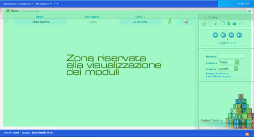
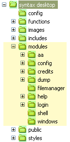
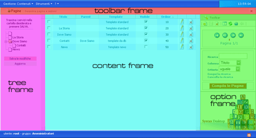
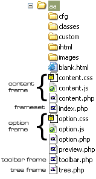
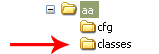
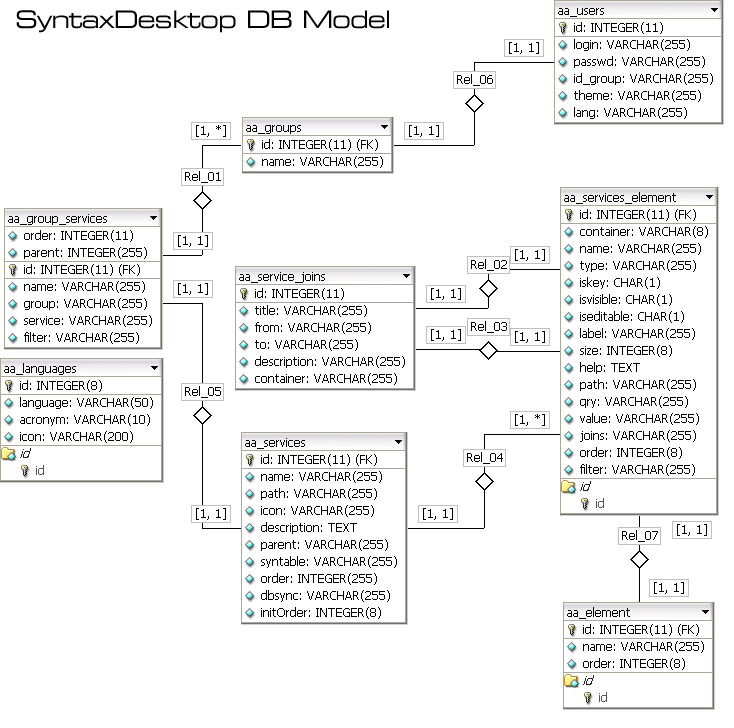

Manuale per lo sviluppatore
Questo testo vuole essere un documento di aiuto per chi vuole
cominciare a personalizzare/modificare il codice sorgente di Syntax
Desktop. Non tutte le parti sono complete. Per informazioni ulteriori
scrivete a info_at_dynamick.it.
DESKTOP
In lavorazione
MODULI
Syntax è strutturato in modo modulare. I moduli hanno sfariate
funzioni e solitamente ricoprono la zona centrale dell'interfaccia.
I moduli risiedono all'interno della cartella /moduli. In questo momento questi
sono i moduli installati:
aa (AutoAdmin): E' il modulo
principe di tutta l'applicazione. Ha lo scopo di interfacciarsi con il
database e di gestire i dati utente e di sistema. I dati di sistema
comprendono l'anagrafica utente-gruppi, la struttura dei servizi e dei
menu di ciascun utente. I dati utente sono invece dati che l'utente
definisce e che deve gestire, come ad esempio le news, gli articoli,
gli appuntamente e così via. AA
config: Questo modulo ha il
compito di gestire la configurazione del sistema. Tramite config
è possibile cambiare i dati di connessione al database. Apre,
legge, e salva il file /config/cfg.php e quindi necessita dei permessi
di scrittura su tale file.
credits: Pagina dei crediti
dump: Modulo dedito al
salvataggio del database (index.php) e del suo ripristino (dosql.php).
filemanager: Pensato come
web-ftp, ancora da sviluppare
help: Pagine di help
login: Modulo che gestisce
l'autenticazione utente
shell: Implementazione di una
shell via web
windows: Modulo che gestisce le
icone e finestre dhtml sul desktop di syntax. Modulo dismesso per
problemi di crossbrowsing.
Di tutti questi moduli, è doveroso spendere un po' di tempo per
analizzare AutoAdmin, il modulo pilastro su cui si basa tutta
l'applicazione.
AutoAdmin (AA)
Prefazione
Nato da precedenti implementazioni, AutoAdmin ha ormai una storia di 3
anni.
AA è mosso dall'idea di poter gestire qualsiasi tipo di dato e
di adattarsi ad innumerevoli varietà di problemi in modo da
rendere la vita di un programmatore web (quale sono io) molto
più semplice. Ho speso infatti la gran parte dei miei primi anni
di lavoro ad implementare interfacce di amministrazione private (back
office) per amministrare siti web. Col tempo però ho scoperto
che le funzionalità da implementare erano grosso modo sempre le
stesse (news, articoli, appuntamenti, ecc...). Ho pensato allora un
modo per poter generare in modo dinamico, dalla stessa applicazione
web, dei servizi per amministrare tali contenuti (e da qui il nome
AutoAdmin).
L'interfaccia
E' stato scelto di implementare l'interfaccia di AA tramite frame in
modo da allegerirla da continui reload completi della pagina. La
struttura dei frame è così composta:

I file che gestiscono incaricati di mostrare ciascun frame sono
schematizzati dal seguente diagramma:

Il frame principale è il Content Frame dentro cui vengono
istanziate le classi che muovono l'applicazione. In particolare,
all'interno di questo frame, viene istanziata la classe SynContainer,
di cui parleremo nella prossime sezioni.
Modus Operandi
Definiamo innanzittutto cosa intendiamo per servizio:
servizio
= struttura specializzata ad amministrare uno specifico dato
Più semplicemente, si potranno creare servizi per la
gestione delle news, servizi per la gestione degli appuntamenti, ecc...
In una piattaforma multiutente come è Syntax Desktop, ho potuto
assegnare all'amministratore lo strumento per la generazione dei
servizi (anche questo è un servizio, eheheh). L'operazione di
generazione/creazioni comporata tre azioni di basso livello
(trasparenti all'utente):
1) Creazione una tabella sul database con i rispettivi campi (se
pensiamo alle news, si crea la tabella news con i relativi campi: id,
titolo, testo, data).
2) Salvataggio della struttura del servizio in apposite tabelle del
database per una futura modifica del servizio
3) Tramite le informazioni sulla struttura del servizio, la
visualizzazione dell'interfaccia per la gestione dei dati
(l'interfaccia è generata dinamicamente).
Un utente del sistema, al quale verranno dati i permessi di
visualizzazione del servizio appena generato, potrà accedere ai
dati, modificali e cancellarli.
L'architettura
L'architettura dei servizi si modella su uno schema ad oggetti
visualizzato nella seguente immagine:

Un servizio è sostanzialmente un contenitore di elementi.
SynContainer ha infatti lo scopo di raggruppare le varie componenti del
servizio e di fornire metodi comuni di gestione. Ogni SynContainer
contiene uno o più elementi (SynElement). Questi elementi si
specializzano in base alla loro funzione. Nel diagramma sopra sono
elencati solo tre elementi specializzati (synDate, synTextArea e
SynPassword) ma allo stato attuale, sono implementati 16 elementi
specializzati.
SynContainer rappresenta una tabella del database mentre SynElement
sono i suoi campi. Aggiungendo o rimuovendo un SynElement dal
SynContainer si opera anche sul database modificandone la struttura. E'
anche chiaro che se aggiungo o cancello un SynContainer, aggiungo o
cancello una tabella sul database.
SynContainer e le specializzazioni di SynElement (SynDate, SynTextArea,
SynPassword, ecc) inoltre si occupano della gestione dell'interfaccia
per la visualizzazione dei dati da essi rappresentati tramite opportuni
metodi che mettono a disposizione.
All'interno del filesystem, le classi si trovano in questa posizione: 
Il
database
Il modello del database è rappresentato dal seguente diagramma:
